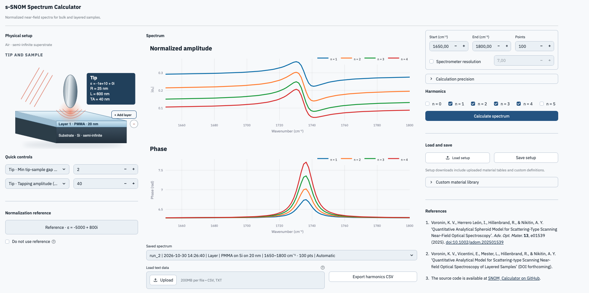

Bulk materials
Start with a single surface.
Model a semi-infinite sample with an isotropic or effective uniaxial response. Set the tip geometry, tapping amplitude, and normalization reference.
Explore the bulk modelNear-field optical spectroscopy
From your sample to its near-field spectrum. Model bulk materials and layered stacks, then compare amplitude and phase with experiment.

Calculate normalized s-SNOM and nano-FTIR spectra with a prolate spheroid tip model. Choose your geometry, material response, and demodulation harmonics.
Model a semi-infinite sample with an isotropic or effective uniaxial response. Set the tip geometry, tapping amplitude, and normalization reference.
Explore the bulk modelDefine films on a substrate, including surface-normal uniaxial materials. The layer engines use the generalised image charge method (GICM) and Fourier integral method (FIM).
Read about the layer enginesWork in the web app for interactive calculations, or use the Python engines directly in your own scripts and notebooks.
Choose from the material catalog, set a constant permittivity, create a Lorentz model, or upload a dielectric-function table.
Inspect amplitude and phase at your chosen harmonics. Use the app’s automatic numerical settings or adjust them yourself.
Import experimental spectra, adjust phase, and compare calculation runs. Export spectra to CSV and save your setup for later.
Run locally, explore the numerical methods, or bring the calculation engines into a Jupyter notebook. The code is available under the MIT license.
Please cite the software version you used, together with the paper for the relevant model. Software releases are archived on Zenodo.
E. Vicentini. s-SNOM Spectrum Calculator (Version 0.1.0) [Computer software]. Zenodo (2026).
doi:10.5281/zenodo.23808593
K. V. Voronin, I. Herrero León, R. Hillenbrand, and A. Y. Nikitin. “Quantitative Analytical Spheroid Model for Scattering-Type Scanning Near-Field Optical Spectroscopy.” Advanced Optical Materials 13, e01539 (2025).
doi:10.1002/adom.202501539
K. V. Voronin, E. Vicentini, L. Mester, R. Hillenbrand, and A. Y. Nikitin. “Quantitative Analytical Model for Scattering-type Scanning Near-field Optical Spectroscopy of Layered Samples.” arXiv (2026).
doi:10.48550/arXiv.2611.01057
Set up a calculation and see the near-field response.